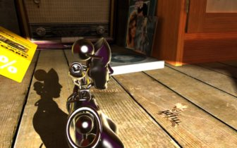
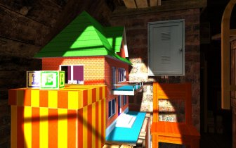
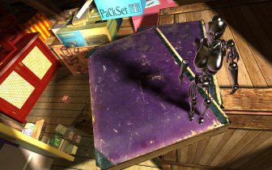
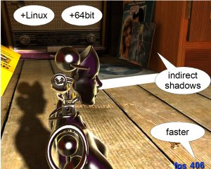
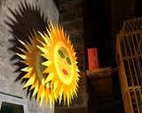

LIGHTSMARK
multiplatform benchmark/demo with REALTIME GLOBAL ILLUMINATION and PENUMBRA SHADOWS



Realtime global illumination, color bleeding, penumbra shadows, captured at 400fps. Click images for 1920x1200 versions.
Lightsmark 2008 (August 2008, v2.0)
Lightsmark 2007 (October 2007, v1.3)
| |
Lightsmark video on YouTube.
|
|
Realtime global illumination
|
Natural lighting makes artificial graphics life-like.
Computers get faster, but rendering more polygons doesn't add value if
lighting looks faked, so insiders know that the next big thing is
proper lighting aka Realtime Global Illumination.
Typical workloads in realtime rendering will shift. Lightsmark simulates it.
Global Illumination renders often take hours.
Is your computer fast enough for realtime?
Before Lightsmark, realtime global illumination was limited to small scenes, small resolutions,
small speeds, specially crafted scenes with handmade optimizations.
Lightsmark breaks all limits at once, running in reasonably sized scene (220000 triangles)
in high resolution (1920x1200) at excellent speed (300+fps).
Lighting is computed fully automatically
in original unmodified scene from 2007 game World of Padman.
|

| |
faster engine (up to 3x higher fps, so scores are different)
increased realism (per-pixel indirect shadows and color bleeding)
Linux support (was Windows only)
native 64bit support (was 32bit only)
all GPUs use the same render path (in 2007 they didn't due to driver bug)
minor rendering fixes (sun's shadow, robot's back faces)
| |

|
|
Frequently asked questions
|
Q: How do I change resolution / run in window in Linux?
A: Run backend ? to list all options. Example: backend 1024x768 window
Q: Lightsmark score depends also on CPU, right?
A: Yes, part of lighting equation is solved by CPU, because it is faster this way. It simulates the best use in real game.
Q: My CPU/GPU is not 100% busy, why?
A: It is available for physics, AI. Score stays reliable and represents what real game can achieve.
Q: Can I run it without music?
A: Yes, it can be disabled (click image in small window and uncheck music, but for standard score, it's better to turn off speakers.
Q: XY says that lighting is fake. Is it?
A: No, it is proper simulation of real light bounces (but with precision lower than in offline renders). Custom scenes may be loaded, there's no space for cheating.
Q: Is there a way to automate Lightsmark, run it from commandline?
A: Yes, run backend ? to list all options. For c++ example, see frontend source code src/Lightsmark2008/Lightsmark2008.cpp.
Q: "The application has failed to start because the application configuration is incorrect."
A: Try to run Microsoft Visual C++ 2008 Redistributable Package (x86) for 32bit version or x64 for 64bit.
Please, email me whether it helped, it's not confirmed yet.
Q: Installation doesn't start.
A: Opera users report that Opera downloader changes file extension from .msi to .exe. You can fix it by manually changing file extension back from .exe to .msi.
Q: It renders garbage or it quits immediately. Log shows some error message.
A: First of all, make sure you have the latest graphics card driver installed, June 2008 or newer, see links below.
If it doesn't help, send me description of problem, together with log.txt created in your Lightsmark directory.
When installed under Vista, Lightsmark directory is not writeable,
so log is in \Users\name\AppData\Lightsmark 2008.
Q: It says "OpenGL 2.0 capable graphics card is required. Please update your graphics card drivers".
A: Use any external tool to see what OpenGL version your driver really supports.
|
Requirements (quite small)
|
Windows XP/Vista (32bit, 64bit) or Linux (32bit, 64bit) [not included but working: Playstation 3/Linux]
OpenGL 2.0 compliant GPU with at least 32 MB RAM
- NVIDIA GeForce 5200-9800, 260-280 (partially GeForce Go, Quadro) with July 2008 or newer drivers!
- AMD Radeon 9500-9800, Xnumber, HDnumber (partially Mobility Radeon, FireGL) with July 2008 or newer drivers!
512 MB RAM
100 MB free disk space
x86/x64 CPU with SSE
installer requires .NET framework, multiplatform archive doesn't
Creative Commons Attribution-Noncommercial
Exception: Files from World of Padman under original game's license.
Shortly what does it mean: you can use it in product reviews/comparisons,
modify source code e.g. to send results to your web,
release new versions etc.